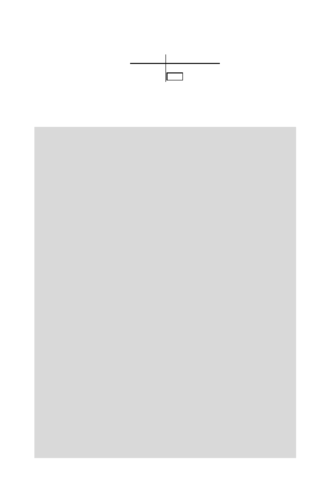

10.4 Clustering
275
D
3
=
OTU
Hy Go(PaHo)
Hy
0
Go(PaHo) 0.15
0
where the distance between Hy and the Go(PaHo) cluster is min
{
d
HyPa
,
d
HyHo
, d
HyGo
}
(=min
{
0
.
15
,
0
.
15
,
0
.
15
}
from matrix
D
1
). This merges the last
OTUs with the others. The dendrogram representing this clustering is shown
in Fig. 10.3.
Computational Example 10.1: Hierarchical clustering using
R
This box illustrates how to perform cluster analysis using
R
. We use the
primate data once more. The first task is to make a file of the sequence data
shown in Table 10.1; as above, we use just the first four species. The file
primates.txt
has 4 rows and 60 columns, coded as a = 1, c = 2, g = 3, t =
4. Having read in the data using
> seqs<-matrix(scan("primates.txt"),nrow=4,byrow=T)
the next task is to compute the distance matrix. In this example, the distance
between two sequences is the proportion of positions at which they differ. The
following function evaluates this distance matrix:
seqdist<-function(x,n)
{
dmat<-matrix(nrow=n,ncol=n)
for(i in 1:n){
for (j in 1:n){
dmat[i,j]<-length(x[j,][x[j,]!=x[i,]])/length(x[1,])}}
return(dmat)
}
> dapes<-seqdist(seqs,4)
> dapes
[,1]
[,2]
[,3]
[,4]
[1,] 0.00 0.15000000 0.1500000 0.15000000
[2,] 0.15 0.00000000 0.1333333 0.06666667
[3,] 0.15 0.13333333 0.0000000 0.10000000
[4,] 0.15 0.06666667 0.1000000 0.00000000
We note that other distances may be calculated using the
R
function
dist
.
The remainder of the clustering is straightforward. For single-linkage cluster-
ing, it results in the dendrogram in Fig. 10.3.
> # make dist object from the data
> dapes1<-as.dist(dapes, diag=FALSE, upper=FALSE)
> #add species labels
> species=c("Hy","Pa","Go","Ho")